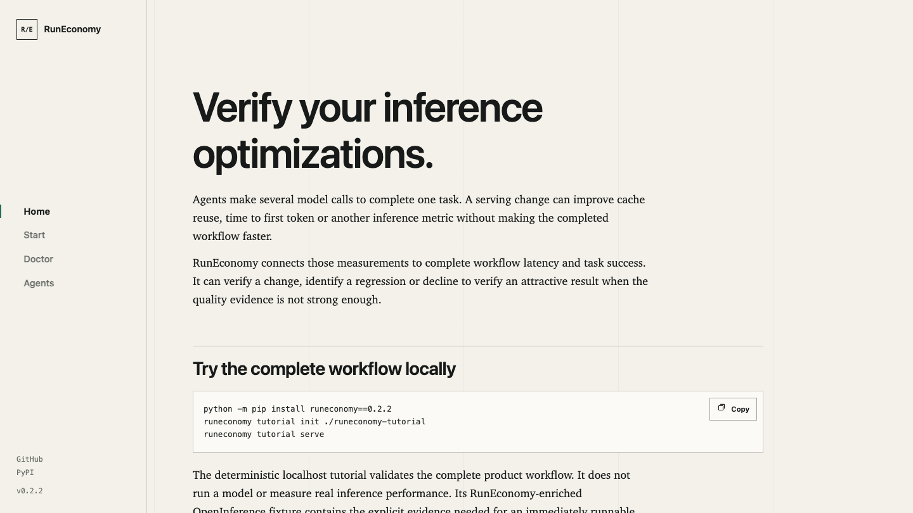

Visit siteHi, I’m Shrey.
I’m a software and data engineer interested in AI systems, data products, and tools that make difficult workflows feel straightforward.
I studied Data Science at UMass Amherst and built data-intensive, customer-facing systems at Siemens and Altair. I also co-led BUILD UMass, a 65+ member engineering organization shipping software for nonprofits.
Ventures
Projects
Contact
I'm always happy to talk about products that impact people and change the world.
shreymisra26@gmail.com